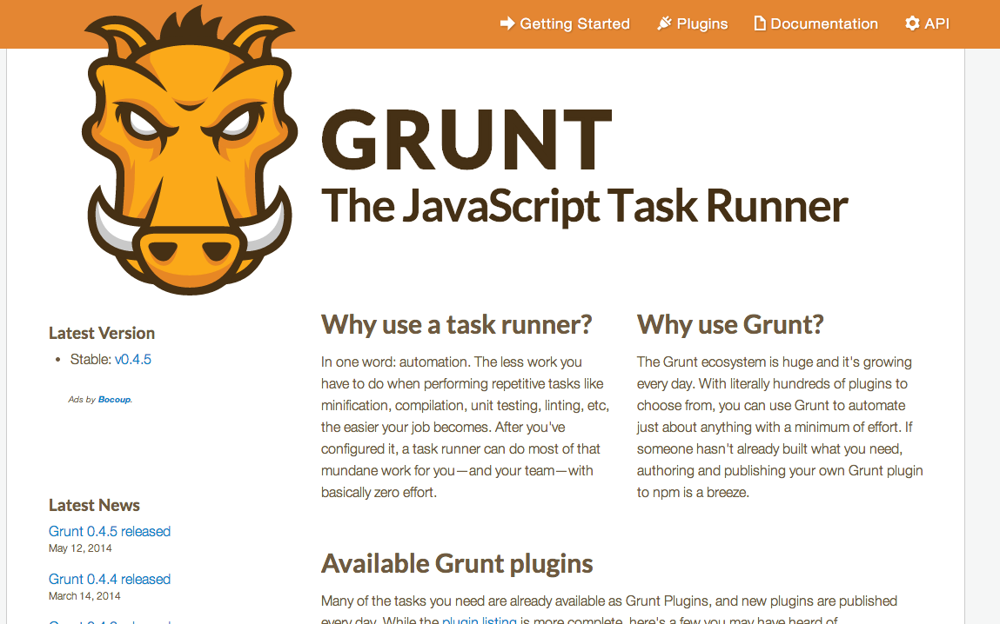
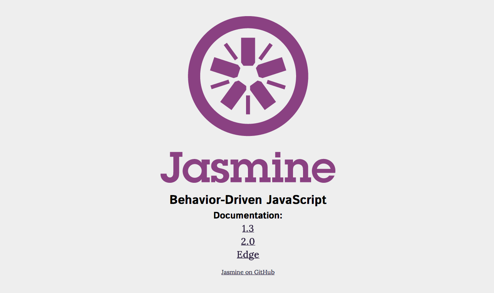

Methodologies:
The Good Parts
By Patty Delgado
Refinery29
Overview
- Intro
- How to Talk to Stakeholders
- Make a Plan
- Our Implementation
- But Why?
Product Development at R29
- Redesign/rebranding August 2013
- Media company turns product-oriented company
- Mobile Web App
- Stakeholders -> Product Managers -> UX -> Development
How to Talk to Stakeholders
They're not dumb, they know bad code when they see it.
Use it to your advantage!
- Separate yourself from that code, and give them a story. Our slideshow was built during a crazy code crunch.
- Give examples of something better
- Our old slideshow
It's a numbers game
If there is anything stakeholders care about, it's numbers
Our Stats
- We get 151 million pageviews a month
- Just celebrated hitting 1 million views in one day
- 6-12K people on the site at any given moment
Pageviews === $$$
Our Shitty Slideshow
45% of our visits are to slideshows
80% of pageviews are to slideshows (ads refresh on pageview)
If our javascript takes too long to load, we lose ad impressions, and we lose big money
Why TDD and good code is good for them
TDD helps destroy regression....mostly.
Tell them even with the best developers, if there is a typo or a mistake, it takes time to find the bug, fix it, and deploy the change.
If that takes 10 min, how many viewers did you lose? How much $$ did you lose?
Get your design and UX team on board
- For us it took forever to make a code change
- 2,000 lines of code means it takes forever to implement a small change to the design
- Give an example! Our mobile site's success helped us
Make a Plan
Choose your technologies
- Grunt for task management
- Jasmine for tests
- Our own MV* for structure
- Agile
- Pair Programming
Deliver, deliver, deliver
Keep stakeholders happy with smaller stories and showing progress as you go
Always have a shareable demo link for them to look at
Be honest about your progress
This is a trade off, you're learning and developing in a new system, and they're getting a better product.
Just keep reminding them of those numbers.
The hot mess that is time estimation
When you start:

Halfway in:

Communication > everything
Be in constant communication with your product person. Let them know when you hit a wall, let them know how long it will take, and tell them what you're working on in a human-understandable way
This is, after all, the core of agile
Our Implementation
Our Own MV*
- Single page app
- Angular is heavy
- Performance is key-- so we used our own implementation that we adapted from our mobile web app
What it looks like
We have a controller which handles:
- Fetching next slideshows
- Generating slides from an API response
- Generating products list from API response
Models for slides, slideshow, and pages
Views for user interactions using a pub/sub system
Grunt
- Grunt is a great task manager
- Runs tests, JSlint, builds and minifies javascript/css files
- One grunt file, hierarchy of commands
- http://gruntjs.com/
- npm install -g grunt-cli
Jasmine
- Behavior driven development tool powered by Pivotal Labs
- Ours is more TDD than BDD
- http://jasmine.github.io/2.0/introduction.html
- We have tests for our models, our views, and our app.js files
Pair Programming and Workflow
One computer, two monitors, two keyboards, two mice
Before you write anything, you talk to each other about what you're implementing, and how you're thinking about doing it.
We had a 3 person team, so one person would be on bug/smaller story duty, while the other two wrote the slideshow project. We traded off.
- Two week sprints
- Constantly deploying to production, everything QA'd as we went
- Launched with a list of known bugs, which we tackled the next day
But why?
Patty, I hate writing tests
- Tests help you think through use cases
- Help you think about architecture
- Makes you think about sustainability of your code
- Makes you someone other people will want to work with
Patty, I hate talking through my code
- Pair programming makes you smarter
- Talk through what you're doing, you get instant feedback
- Don't be insecure! No one is 100% right all of the time, none of us are geniuses, you have to be open to other ways of doing things
- Makes you someone other people will want to work with
Patty, this is too much effort for one project
- If not now, when?
- "Later" is always an excuse
- You'll never get better unless you invest in new things
- Just try it!
Thank you!
@pattydelgado on twitter
@partydelgado on github
patty.delgado@refinery29.com